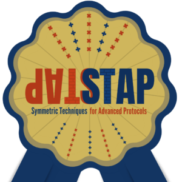

What is STAP?
The term STAP (Symmetric Techniques for Advanced Protocols) was first introduced in STAP’23, an affiliated workshop of Eurocrypt’23. It generally refers to algorithms in symmetric cryptography specifically designed to be efficient in new advanced cryptographic protocols. These contexts include zero-knowledge (ZK) proofs, secure multiparty computation (MPC) and (fully) homomorphic encryption (FHE) environments. It encompasses everything from arithmetization-oriented hash functions to homomorphic encryption-friendly stream ciphers.